\maketitle \tableofcontents \newpage
The beam is simply supported with the following prescribed boundary conditions and loading:
| Parameter | Symbol | Value |
|---|---|---|
| Support span | L | 8.0in |
| Total beam length | L_total | 9.0in |
| Load Case 1 magnitude | P_1 | 5.0lbf |
| Load Case 1 location | a_1 | 4.0in from support A (midspan) |
| Load Case 1 orientation | N/A | Upright (load applied vertically) |
| Load Case 2 magnitude | P_2 | 8.0lbf \quad (2 + Team\# = 2 + 6) |
| Load Case 2 location | a_2 | 5.0in from support A \quad (2 + 62 = 5) |
| Load Case 2 orientation | N/A | Rotated 90\degree about span axis |
| Required factor of safety | FoS_\min | >= 1.5 for both load cases |
Minimize the weight of the printed beam, \[ minimize\quad W = \rho \int_0^L A(x)\,dx, \] subject to the factor-of-safety constraint for both load cases and all engineering and manufacturing constraints defined in Section sec:constraints.
The beam cross-section is a tapered hollow rectangular tube with spanwise lightening openings. The geometry is fully described by 10 continuous design variables:
| Variable | Symbol | Units | Role |
|---|---|---|---|
| Left/mid/right outer width | b_L, b_M, b_R | in | Tube width at x=0,L/2,L |
| Left/mid/right outer height | h_L, h_M, h_R | in | Tube height at x=0,L/2,L |
| Wall thickness | t | in | Uniform flange/web thickness |
| Left/mid/right opening ratio | r_L, r_M, r_R | -- | Fraction of inner web height removed |
All six profile dimensions (b, h, r) vary continuously along the span via piecewise linear interpolation between the three control points. Wall thickness t is kept spatially uniform, consistent with FDM slice practice.
The Rapid Prototyping Studio (JCAIN 422) stocks four filament options. Their nominal bulk properties and effective FDM properties are:
| Material | E [psi] | \sigma_allow [psi] | \rho [lbf/in^3] | |||
|---|---|---|---|---|---|---|
| k_orient | k_infill | E_eff [psi] | ||||
| PLA | 500\,000 | 4\,000 | 0.045 | 0.70 | 0.85 | 297\,500 |
| ASA | 380\,000 | 3\,600 | 0.043 | 0.65 | 0.85 | 209\,950 |
| PETG | 290\,000 | 3\,500 | 0.046 | 0.72 | 0.85 | 177\,480 |
| TPU | 10\,000 | 2\,500 | 0.043 | 0.75 | 0.90 | 6\,750 |
FDM parts are mechanically anisotropic because deposited layers bond through partial re-melting. The interlayer bond is the dominant failure surface. Two reduction factors are applied multiplicatively to all nominal isotropic properties:
in strength and stiffness perpendicular to the print plane. When the span axis lies along the print direction (layer lines parallel to the neutral axis), load is transferred through the solid infill struts rather than across layer interfaces. We use k_orient = 0.70 for PLA, consistent with RPS guidance that layer lines are ``the single biggest failure point.''
solid volume at less-than-100% rectilinear infill. We use k_infill = 0.85, corresponding to approximately 40% rectilinear infill with solid top/bottom shells. The physical beams were actually printed at 100% infill density (confirmed from the slicer project file), making the fabricated parts stiffer and stronger than the model predicts. This means measured deflections may be somewhat lower than the theoretical values, and the actual factor of safety exceeds the computed minimum.
Effective properties: \[ E_eff = k_orient\,k_infill\,E_bulk = 0.70 x 0.85 x 500\,000 = 297\,500\ psi \] \[ \sigma_allow,eff = k_orient\,k_infill\,\sigma_allow = 0.70 x 0.85 x 4\,000 = 2\,380\ psi \]
PLA is selected for the following engineering reasons:
versus 209\,950, 177\,480, and 6\,750 psi for ASA, PETG, and TPU respectively. Deflection is inversely proportional to E_effI; PLA permits the smallest cross-section for a given deflection.
psi gives the largest FoS margin for a given cross-section, enabling more material removal.
requires no special enclosure or bed adhesion, making reliable prints more likely.
representative of structural polymers; ASA is marginally lighter but at the cost of significantly lower effective properties.
TPU is immediately eliminated (flexible elastomer, not a structural polymer). ASA and PETG are eliminated because both have lower E_eff and lower \sigma_allow,eff than PLA; the same geometry would be heavier and weaker.
At each spanwise location x, the cross-section is a hollow rectangular tube with a centered web opening (lightening slot) in both vertical web faces. The outer dimensions at position x are b(x) x h(x); the wall thickness t is uniform throughout. The opening removes a fraction r(x) of the clear inner web height h_clear(x) = h(x) - 2t from both web faces, leaving solid flanges top and bottom.
Each of the three continuous profiles is defined by piecewise linear interpolation between three control points at x = 0 (left support), x = L/2 = 4\ in (midspan), and x = L = 8\ in (right support):
\[ b(x) = cases b_L + 2(b_M - b_L)L\,x, & 0 <= x <= L2 \\[6pt] b_M + 2(b_R - b_M)L\,(x - L2), & L2 < x <= L
\]
and analogously for h(x) and r(x). This three-point piecewise-linear scheme provides enough shape freedom to represent arch profiles, linearly tapered beams, and uniform beams as special cases, while keeping the number of design variables tractable.
\[ A(x) = 2\,b(x)\,t + [1 - r(x)]\,2\,t\,h_clear(x), \quad h_clear(x) = h(x) - 2t \] The first term is the two horizontal flanges; the second is the remaining vertical web area after the lightening slot is removed.
The full hollow-tube second moment minus the two opening slots: \[ I_upright(x) = b(x)\,h(x)^3 - [b(x)-2t]\,[h(x)-2t]^312 - 2\,t\,[r(x)\,(h(x)-2t)]^312 \]
The beam is physically rotated 90\degree about the span axis, so b becomes the vertical (bending) dimension and h becomes the lateral dimension: \[ I_side(x) = h(x)\,b(x)^3 - [h(x)-2t]\,[b(x)-2t]^312 - 2\,t\,[r(x)\,(b(x)-2t)]^312 \]
The section modulus uses c_y(x) for upright bending (extreme fiber in the y-direction, i.e.\ half the outer height) and c_z(x) for side-rotated bending (extreme fiber in the z-direction, i.e.\ half the outer width): \[ S_upright(x) = \fracI_upright(x)c_y(x), \qquad c_y(x) = h(x)2 \] \[ S_side(x) = \fracI_side(x)c_z(x), \qquad c_z(x) = b(x)2 \]
\[ A_shear(x) = [1 - r(x)]\,2t\,h_clear,active(x) \] where h_clear,active is the clear inner dimension in the active bending orientation: h_clear(x) = h(x)-2t for upright, (b(x)-2t) for side.
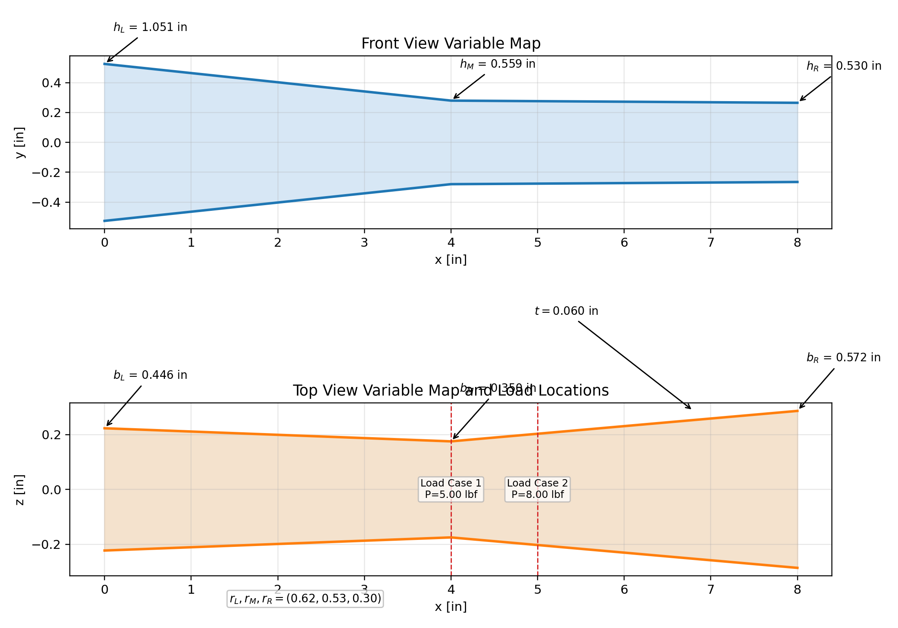
Caption: Variable map for the final optimized design. Front view (top) shows the height profile h(x) with control-point annotations; top view (bottom) shows the width profile b(x), wall thickness t, and load locations.
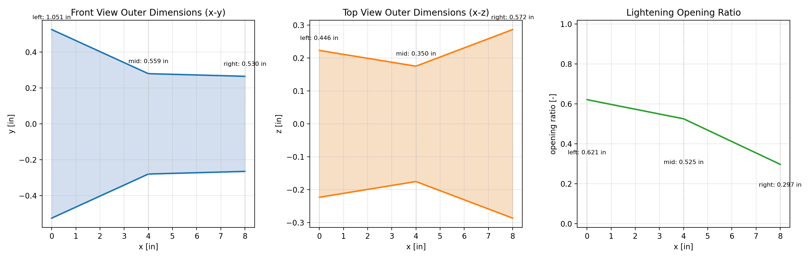
Caption: Outer dimension profiles and lightening-opening ratio for the final design. Left: front-view height profile h(x); centre: top-view width profile b(x); right: web opening ratio r(x) along the span.
For a simply supported beam with one point load P at x = a: \[ R_A = P(L-a)L, \qquad R_B = PaL \]
Shear force and bending moment (piecewise, with the load-point discontinuity): \[ V(x) = cases R_A & 0 <= x < a \\ R_A - P & a < x <= L cases \qquad M(x) = cases R_A\,x & 0 <= x < a \\ R_A\,x - P(x-a) & a < x <= L cases \]
The von Mises criterion combines all stress components into one scalar that can be compared directly against the effective allowable stress. The three intermediate quantities that feed into it are:
Using the Euler-Bernoulli flexure formula at the extreme fiber (distance c_y or c_z from the neutral axis, depending on orientation): \[ \sigma_b(x) = |M(x)|S(x) \]
Shear is distributed over the active web area remaining after the lightening opening. A conservative uniform-distribution approximation is used: \[ \tau(x) = |V(x)|A_shear(x) \]
For the plane-stress state at the critical point (bending-dominant at the extreme fiber, shear-dominant at the neutral axis): \[ \sigma_vm(x) = \sigma_b(x)^2 + 3\,\tau(x)^2 \]
The \sigma_b^2 term dominates wherever |M(x)| is large (e.g.\ midspan); the 3\tau^2 term dominates near the supports where M \to 0 but V is nonzero. The governing (maximum) von Mises stress determines the minimum FoS over the span.
\[ FoS(x) = \frac\sigma_allow,eff\sigma_vm(x) \]
The governing (minimum) FoS is tracked at every discretized station x across both load cases: \[ FoS_min = \min_x,\,LC FoS(x) \]
The design constraint is FoS_min >= 1.5.
The Euler-Bernoulli beam equation for a non-uniform cross-section: \[ E_eff\,I(x)\,v''(x) = M(x) \]
Because I(x) varies continuously with x, slope \theta(x) = v'(x) and deflection v(x) are obtained by numerical integration (trapezoidal rule, 801 stations) with simple-support boundary conditions v(0) = v(L) = 0:
\theta(x) &= \int_0^x M(s)E_eff\,I(s)\,ds + C_1 \\ v(x) &= \int_0^x \theta(s)\,ds + C_1\,x
The integration constant C_1 is determined by enforcing v(L) = 0.
\[ W = \rho \int_0^L A(x)\,dx \]
The integral is evaluated numerically over the same 801-station grid.
Self-weight is not included in the shear, moment, stress, or deflection calculations. Justification:
than 5% of applied load. At 0.27%, the assumption is conservative by more than an order of magnitude; including self-weight would increase midspan stress by < 0.3%.
The full analysis pipeline from inputs to objective is: \[ (L,\,P,\,a) \;\xrightarrowstatics\; R_A,\,R_B \;\; V(x),\,M(x) \;\xrightarrowgeometry\; A(x),\,I(x),\,S(x) \;\; \sigma_b,\,\tau \;\; \sigma_vm \;\; FoS \] \[ M(x),\,E_eff,\,I(x) \;\xrightarrowintegration\; v(x) \qquad\qquad A(x),\,\rho \;\xrightarrowintegration\; W \]
Both load cases use the same geometry functions; the active bending orientation switches between I_upright,\,c_y (LC1) and I_side,\,c_z (LC2).
An idealized stress analysis would permit geometries that are physically unrealizable on an FDM printer. The following engineering judgment constraints are hard-coded in beam_solver.py (TaperedRectangularTube.validate()):
At a simply supported beam end, the bending moment is zero, so idealized theory requires zero section modulus (i.e., zero cross-section). In reality, the beam must physically contact its supports and transfer shear. The code enforces h(x), b(x) >= 0.15\ in (approx. 3.8\ mm) at every station.
A purely stress-based analysis would permit paper-thin walls wherever stress is low. On a 0.4 mm nozzle, fewer than two continuous perimeters (< 0.8\ mm) produces unreliable, porous walls. The code enforces t >= 0.040\ in (approx. 1.0\ mm).
t < b/2 and t < h/2 at every station; otherwise the tube wall would overlap the centerline.
The remaining solid ligament on each side of a web opening must exceed the wall thickness: 12(1 - r)\,h_clear > t. This ensures the web-to-flange junction is thick enough for load transfer and printing.
A ratio of 1.0 would remove the web entirely, leaving two unconnected flanges. The code enforces r < 0.95.
The optimizer search bounds are more restrictive than these hard minimums, providing the primary engineering envelope:
| Variable | Optimizer minimum | Optimizer maximum |
|---|---|---|
| Height h [in] | 0.38 | 1.30 |
| Width b [in] | 0.35 | 1.60 |
| Wall thickness t [in] | 0.06 | 0.18 |
| Opening ratio r [--] | 0.00 | 0.87 |
The minimum height of 0.38\ in (approx. 9.7\ mm) ensures a realistic cross-section at every station including at the supports. The maximum opening ratio of 0.87 was chosen to guarantee at least 1.9\ mm of solid ligament per side at the minimum-height station, about 5 nozzle widths at 0.4 mm, sufficient for a reliable continuous wall.
A two-phase surrogate-free method was used:
600 candidate designs are drawn by stratified random sampling across the 10-dimensional design space. LHS guarantees that each variable's range is sampled uniformly, avoiding clustering inherent in purely random Monte Carlo sampling.
After the global phase, the top 20 feasible designs (``elites'') are identified. Around each elite, 35 new candidates are sampled from a Gaussian neighborhood with standard deviation shrinking by 1/(k+1) each round. This is repeated for 8 rounds, progressively concentrating the search near the current best design.
Total designs evaluated: 1\,300; feasible designs found: 684.
The search minimizes a penalized composite objective: \[ f(d) = W + 500\,\bigl(\max(0,\;1.5 - FoS_min)\bigr)^2 + 12.0\,\bigl(FoS_min - 1.5\bigr)^2 + 0.5\,u^2 \]
where:
this is what drives the optimizer to remove material rather than stopping at the first feasible design.
stations, penalizing cross-sections far from the target stress level and encouraging a more uniform stress distribution.
The excess-FoS weight of 12.0 was determined through systematic trial. Values below \sim 1.0 left the optimizer content with FoS \gg 1.5; values above \sim 20 caused constraint violations.
For Team 6, P_2 = 8\ lbf at a_2 = 5\ in produces a maximum bending moment of: \[ M_max,LC2 = R_A,LC2 x a_2 = 8(8-5)8 x 5 = 3 x 5 = 15\ lbf \cdot in \]
Load Case 1 produces: \[ M_max,LC1 = R_A,LC1 x a_1 = 5(8-4)8 x 4 = 2.5 x 4 = 10\ lbf \cdot in \]
LC2 has 50% more bending moment than LC1, and acts in the side-rotated orientation where the width b (not height h) is the critical bending dimension. This fundamentally changes the optimal design topology compared to a team with a smaller P_2: the optimizer must now ensure adequate width at the location of peak LC2 moment.
Early runs produced designs with extreme height tapers (h_max/h_min > 4x), which generated non-contiguous 3D meshes. Capping the maximum height at 1.30\ in limits the taper ratio to <= 2.13x in the final design, ensuring a single contiguous 3D solid.
| Variable | Value | Notes |
|---|---|---|
| b_L [in] | 0.823 | Wide left end; carries LC2 side bending and LC1 shear |
| b_M [in] | 0.350 | Minimum allowed; width is not the critical dimension at midspan |
| b_R [in] | 0.350 | Minimum allowed; LC2 moment decreases toward right support |
| h_L [in] | 0.959 | Tall left end provides LC1 upright bending capacity and web shear area |
| h_M [in] | 0.727 | Moderate midspan height; LC1 upright bending governs here |
| h_R [in] | 0.606 | Shorter right end; LC2 reaction is large at this support (R_B=5 lbf) |
| t [in] | 0.060 | Minimum allowed (approx. 1.5\ mm, 3.75 nozzle widths) |
| r_L [--] | 0.334 | 33% web opening at left (limited by LC2 shear demand) |
| r_M [--] | 0.650 | 65% web opening at midspan where both moments are moderate |
| r_R [--] | 0.276 | 28% web opening at right where R_B is largest |
The optimizer found a left-heavy taper: the left end is the widest (b_L = 0.823\ in) and tallest (h_L = 0.959\ in), while the beam tapers down toward the right. This makes physical sense:
increases monotonically from x = 0 on the left side. For side-rotated bending, section modulus S_side \propto b^2; the optimizer responds by making b largest on the left where moment is increasing.
handled by the height profile; h_M = 0.727\ in gives FoS_LC1 = 3.96, safely above 1.5 but not the governing case.
solid material at the right end to transfer shear, so r_R = 0.276 (only 28% opening) versus r_M = 0.650 (65% opening at midspan where both moments are moderate).
The minimum remaining ligament per web side is at the midspan station: \[ \ell_min = 12(1 - r_M)(h_M - 2t) = 12(1 - 0.650)(0.727 - 0.120) = 0.1062\ in approx. 2.70\ mm \] This is approx. 6.7 nozzle widths at 0.4 mm, providing a continuous reliable wall. Height taper ratio: \[ h_max/h_min = 0.959 / 0.606 = 1.58x \] Well below the 4.73x ratio of early non-printable designs.
\[ b(x)=cases0.8230 + (-0.2365)\,x, & 0 <= x <= 4.0000\\ 0.3500 + (0.0000)\,(x-4.0000), & 4.0000 < x <= 8.0000cases \] \[ h(x)=cases0.9594 + (-0.0582)\,x, & 0 <= x <= 4.0000\\ 0.7266 + (-0.0302)\,(x-4.0000), & 4.0000 < x <= 8.0000cases \] \[ r(x)=cases0.3342 + (0.0791)\,x, & 0 <= x <= 4.0000\\ 0.6504 + (-0.1872)\,(x-4.0000), & 4.0000 < x <= 8.0000cases \]
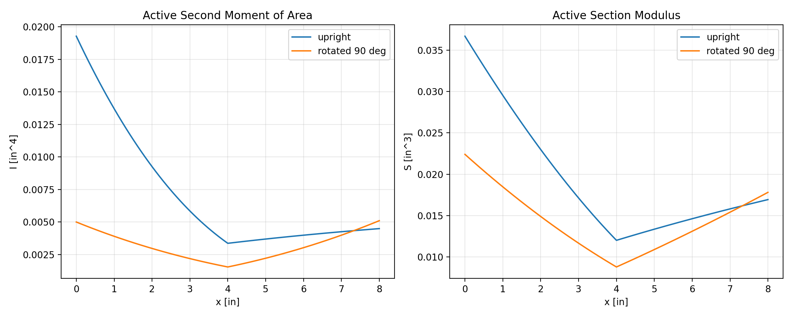
Caption: Second moment of area I(x) (left) and section modulus S(x) (right) for the final design in both upright and side-rotated orientations. Note that I_side and S_side are largest near the left support where b_L = 0.823\ in; the optimizer places width where LC2 bending moment is largest (increasing from left to the load at x=5\ in).
Caption: Load case analysis summary for the final optimized design. LC2 governs with a minimum FoS of 1.522 at x = 5.0 in.
| Load Case | Orientation | P [lbf] | a [in] | ||||
|---|---|---|---|---|---|---|---|
| R_A [lbf] | R_B [lbf] | ||||||
| Min FoS | Max |v| [in] | ||||||
| LC1 | Upright | 5.000 | 4.000 | 2.500 | 2.500 | 3.956 | 0.02538 |
| LC2 | Side-rotated | 8.000 | 5.000 | 3.000 | 5.000 | 1.522 | 0.11608 |
Load Case 2 governs with FoS_min = 1.522 at x = 5.0\ in. This is the load application point for LC2, exactly where M_LC2(x) reaches its maximum of 15\ lbf\cdot in, which is 50% larger than the LC1 peak moment of 10\ lbf\cdot in. For Team 6, LC2 is the structurally demanding case because the load is heavier (8 vs 5 lbf), applies at an off-center location that generates a larger moment arm, and acts in the side-rotated orientation where the critical section modulus S_side \propto b^2 requires large width.
Reactions: \[ R_A = 5.000(8.000 - 4.000)8.000 = 2.500\ lbf, \qquad R_B = 5.000 x 4.0008.000 = 2.500\ lbf \]
\[ FoS_min,LC1 = \frac\sigma_allow,eff\sigma_vm,max,LC1 = 2\,380602 = 3.956 \quad at x = 4.000\ in \]
Load Case 1 is easily satisfied because the design must be sized for the larger LC2 load; LC1 becomes a secondary condition with comfortable margin.
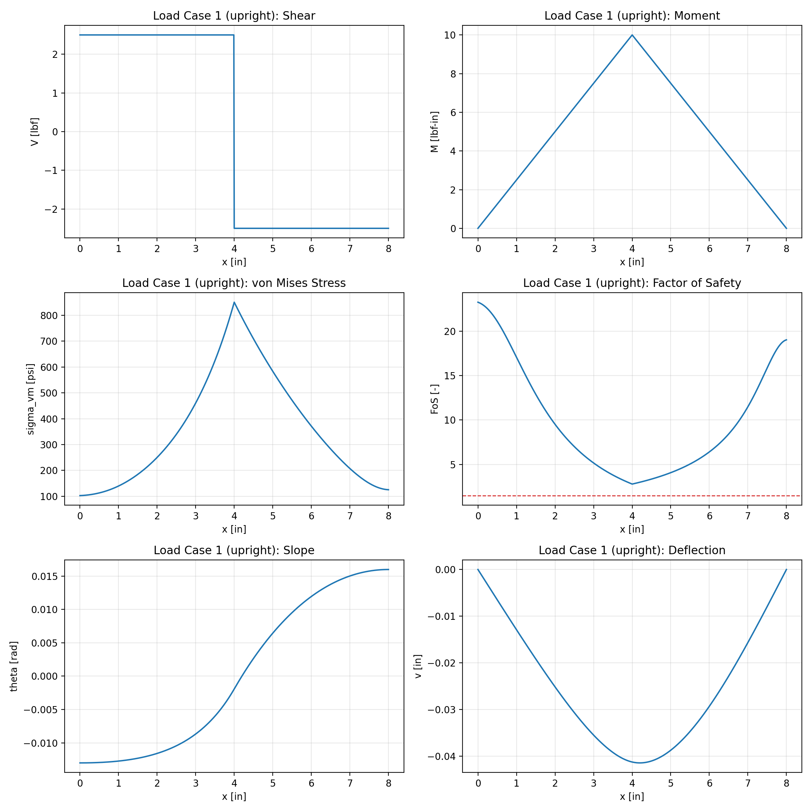
Caption: Load Case 1 results (upright orientation, P_1=5\ lbf, a_1=4\ in). Clockwise from top-left: shear diagram, bending moment diagram, von Mises stress, factor of safety (dashed red line at FoS = 1.5), slope, and deflection. The governing FoS of 3.956 at midspan showing significant reserve capacity under LC1; the design is sized by the heavier LC2.
Reactions (Team 6: P_2 = 8\ lbf, a_2 = 5\ in): \[ R_A = 8.000(8.000 - 5.000)8.000 = 3.000\ lbf, \qquad R_B = 8.000 x 5.0008.000 = 5.000\ lbf \]
\[ FoS_min,LC2 = \frac\sigma_allow,eff\sigma_vm,max,LC2 = 2\,3801\,564 = 1.522 \quad at x = 5.000\ in \]
The beam is physically rotated 90\degree about the span axis, so bending now occurs about the width axis. I_side(x) and S_side(x) are used in place of the upright section properties.
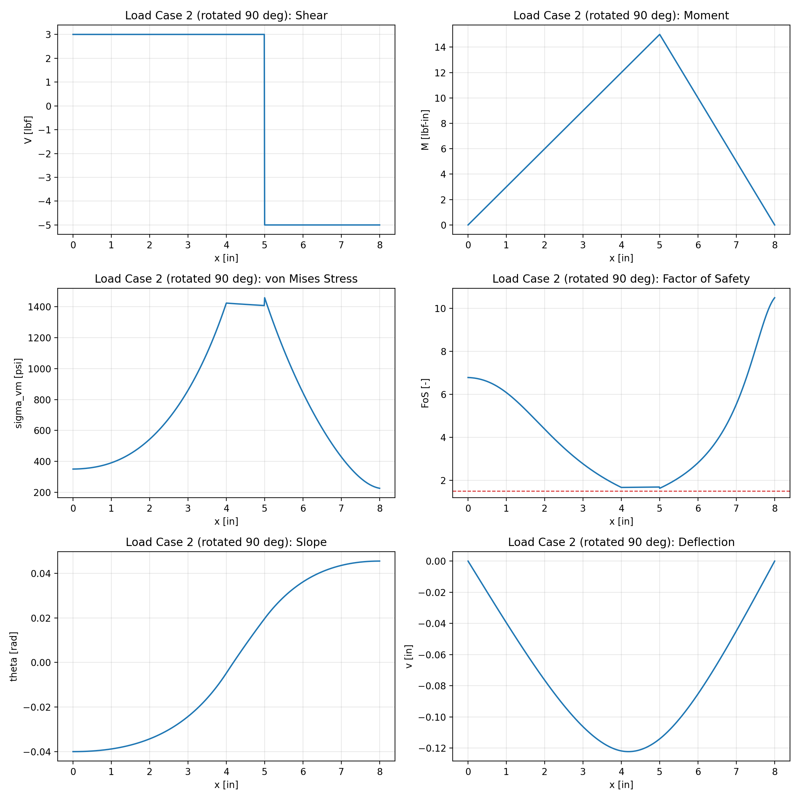
Caption: Load Case 2 results (side-rotated 90\degree, P_2=8\ lbf, a_2=5\ in). The asymmetric load (R_B = 5\ lbf, larger than R_A = 3\ lbf) produces a moment diagram peaking at x=5\ in. The governing FoS of 1.522 occurs there. Maximum deflection of 0.116 in occurs near x=4.6\ in.
All optimization runs used Team 6 load parameters (P_2 = 8\ lbf, a_2 = 5\ in) and PLA effective properties. The six major optimizer configurations are summarized below.
Caption: Summary of major optimization runs. All runs used Team 6 loading. Run E produced the lightest feasible design and is the basis for the analytical results in Sections sec:design and sec:results.
| Run | Design change | Weight [lbf] | Min FoS | Governs | Notes |
|---|---|---|---|---|---|
| Run A | First attempt, conservative weight penalty | 0.05433 | 1.632 | LC2 | Weight penalty too weak; over-designed |
| Run B | Increased material-removal pressure | 0.03979 | 1.522 | LC2 | Good improvement; not yet minimum |
| Run C | Varied proportions: taller and narrower | 0.03929 | 1.544 | LC2 | Competitive topology |
| Run D | Varied proportions: shorter and wider | 0.03818 | 1.547 | LC2 | Slightly lighter |
| Run F | Conservative FoS target, cross-check | 0.04589 | 1.500 | LC2 | FoS exactly at limit; heavier |
The final analysis design (W = 0.03454\ lbf, Run E) is 36% lighter than the first attempt (W = 0.05433\ lbf, Run A). The key tuning parameter is how aggressively the program is instructed to remove material: set too low and the optimizer accepts any beam that merely passes 1.5 FoS without trying to slim it down further; set too high and it starts violating the constraint. The value used in Run E was determined by trial and error over Runs A through F.
\[ E_eff = E \cdot k_orient \cdot k_infill = 500\,000 x 0.700 x 0.850 = 297\,500\ psi \] \[ \sigma_allow,eff = \sigma_allow \cdot k_orient \cdot k_infill = 4\,000 x 0.700 x 0.850 = 2\,380\ psi \] \[ W = \rho \int_0^L A(x)\,dx = 0.03454\ lbf \]
\[ R_A = 5.000(8.000 - 4.000)8.000 = 2.500\ lbf, \qquad R_B = 5.000 x 4.0008.000 = 2.500\ lbf \] \[ FoS_min,LC1 = 2\,380602 = 3.956 \quad at x = 4.000\ in \] \[ \max|v_LC1(x)| = 0.02538\ in, \qquad \max|\theta_LC1(x)| = 0.01054\ rad \]
\[ R_A = 8.000(8.000 - 5.000)8.000 = 3.000\ lbf, \qquad R_B = 8.000 x 5.0008.000 = 5.000\ lbf \] \[ FoS_min,LC2 = 2\,3801\,564 = 1.522 \quad at x = 5.000\ in \] \[ \max|v_LC2(x)| = 0.11608\ in, \qquad \max|\theta_LC2(x)| = 0.05218\ rad \]
All stress--strain relationships are linear. PLA at the effective allowable of 27.6 MPa is well within the linear elastic range (bulk yield approx. 50--70 MPa).
The Euler-Bernoulli equation M = EI\,v'' assumes slopes small enough that v' \ll 1. Under LC2 (governing), maximum slope is \theta_max = 0.052\ rad approx. 3.0^deg, which is at the upper boundary of the small-angle assumption. Actual deflection may be slightly underestimated.
Euler-Bernoulli kinematics neglect shear deformation. For the slender beam (L/h_eff approx. 11), shear deformation contributes < 3% of total deflection.
Frictionless pin and roller are assumed. Real supports may introduce small moments absorbed by the FoS margin.
Justified in Section sec:theory: self-weight is < 0.3% of applied loads. The wire used to hang the load bucket was also not weighed separately; the actual applied loads measured on a scale were 4.95 lbf (LC1, nominal 5.0 lbf) and 7.95 lbf (LC2, nominal 8.0 lbf). This 1% shortfall is within measurement uncertainty and is partially offset by the wire weight being applied at the same point as the bucket.
True FDM anisotropy is reduced to two scalar factors (k_orient, k_infill) applied uniformly. This is conservative (underestimates stiffness in favourable fibre directions) and consistent with RPS guidance.
The lightening slot is modeled as a rectangular cutout of height r(x)\,h_clear(x) centered on the neutral axis. Fillet transitions are neglected, slightly under-predicting stiffness at the opening corners.
Two beams were fabricated for physical testing. Both are asymmetric closed-tube designs (no web openings) from the print-safe optimization run. Beam A (the primary candidate) is the lighter, higher-FoS design; Beam B serves as a backup.
Caption: Printed beam candidates. Beam A is the primary test beam; Beam B is used if Beam A fails or shows an unacceptable defect.
| Beam | Weight [g] | Min FoS | Governs | Max |v| [in] | Role |
|---|---|---|---|---|---|
| Beam B (design iteration 19) | 19.5 | 1.649 | LC2 | 0.141 | Backup |
Caption: Slicer and print settings used for both fabricated beams.
| Setting | Value / Choice |
|---|---|
| Printer | Creality K1 |
| Material | PLA (Creality K1 stock) |
| Print orientation | Span axis horizontal, load axis vertical |
| (layer lines parallel to span \Rightarrow loads cross solid infill, | |
| not layer interfaces) | |
| Infill pattern | Monotonic rectilinear |
| Infill density | 100% (fully solid interior; analysis used k_infill=0.85, |
| which is conservative; actual beam is stiffer than modeled) | |
| Wall perimeters | 3--4 (consistent with t = 0.060\ in approx. 1.5\ mm) |
| Layer height | 0.20mm (fine, for improved layer bonding) |
| Nozzle diameter | 0.40mm |
| STL scale | 2540% uniform (mesh coordinates in inches) |
| Supports | Included; supports blocked from entering closed-tube interior |
| Expected failure mode | Tensile fracture at x approx. 5\ in outer fiber |
| during LC2 (side-rotated bending) |
Per the Rapid Prototyping Studio (JCAIN 422) guidance: ``If the cross section of the beam is along these [layer] lines, the part will almost certainly fail under significant load. If the layer lines are along the span of the beam, it will be able to withstand much higher loads.'' We print with the span horizontal so layer lines run along x, parallel to the neutral axis. The critical failure mode is tensile fracture at x = 5\ in during LC2 side-bending; with proper orientation this load is transferred through solid infill struts rather than across layer boundaries, which is the orientation captured by k_orient = 0.70.
\fbox%
\large CRITICAL: Both beams are asymmetric.\\[4pt] Neither beam can be flipped end-for-end. The optimizer (mirror_profile = false) produced different cross-sections at each end, tuned to the asymmetric LC2 reaction forces (R_A = 3\ lbf, R_B = 5\ lbf). Reversing the orientation changes the stress distribution and may cause the beam to fail below the 1.5 FoS limit.\\[4pt] Place each beam with the correct end at each support as shown in the tables below. The support locations are x = 0.5\ in from each end of the 9 in beam (8 in span).
Caption: Beam A end dimensions and support placement. The taller end goes on Support B; the shorter end goes on Support A.
| End | Outer width b [in] | Outer height h [in] | Place on |
|---|
\noindentHow to identify Beam A's ends: The taller, narrower cross-section goes on Support B; the shorter, slightly wider cross-section goes on Support A. Mid-section width is 0.417 in.
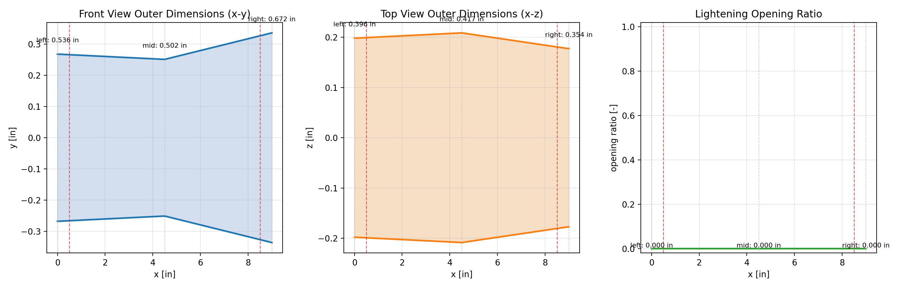
Caption: Beam A (primary, 18.4 g) outer dimension profiles. Horizontal axis: spanwise position x [in], 0 to 9 in (Support A at 0.5 in, Support B at 8.5 in). Vertical axes: dimensions in inches. Left: front-view height profile h(x); the taller right end (h_R = 0.672\ in, Support B) versus the shorter left end (h_L = 0.536\ in, Support A). Centre: top-view width profile b(x) [in]. Right: web opening ratio r(x) = 0 everywhere (solid walls throughout).
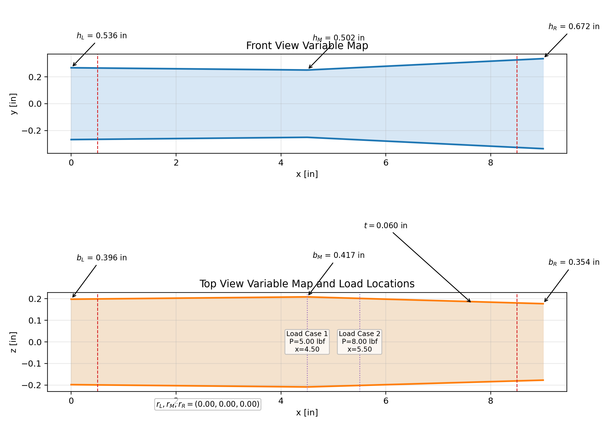
Caption: Beam A parameter map showing the spanwise variation of all cross-sectional dimensions. The asymmetric taper is clearly visible: the left end (Support A, x=0) is shorter and the right end (Support B, x=9\ in) is taller.
Caption: Beam B end dimensions and support placement. Note the opposite taper: the tall end goes on Support A for this beam.
| End | Outer width b [in] | Outer height h [in] | Place on |
|---|
\noindentHow to identify Beam B's ends: The tall, narrow cross-section goes on Support A; the short, wide cross-section goes on Support B. This is the opposite handedness from Beam A; do not swap beams between supports without checking the labels. Mid-section width is 0.356 in.
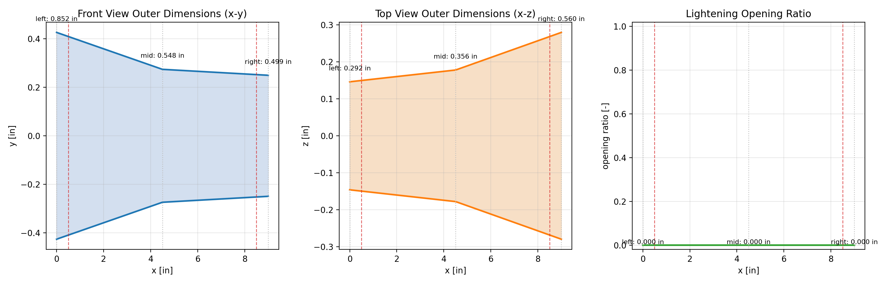
Caption: Beam B (backup, 19.5 g) outer dimension profiles. Horizontal axis: spanwise position x [in], 0 to 9 in. Vertical axes: dimensions in inches. Note the opposite taper from Beam A: the tall, narrow end (h_L = 0.852\ in, Support A) is on the left; the shorter, wide end (h_R = 0.499\ in, Support B) is on the right.
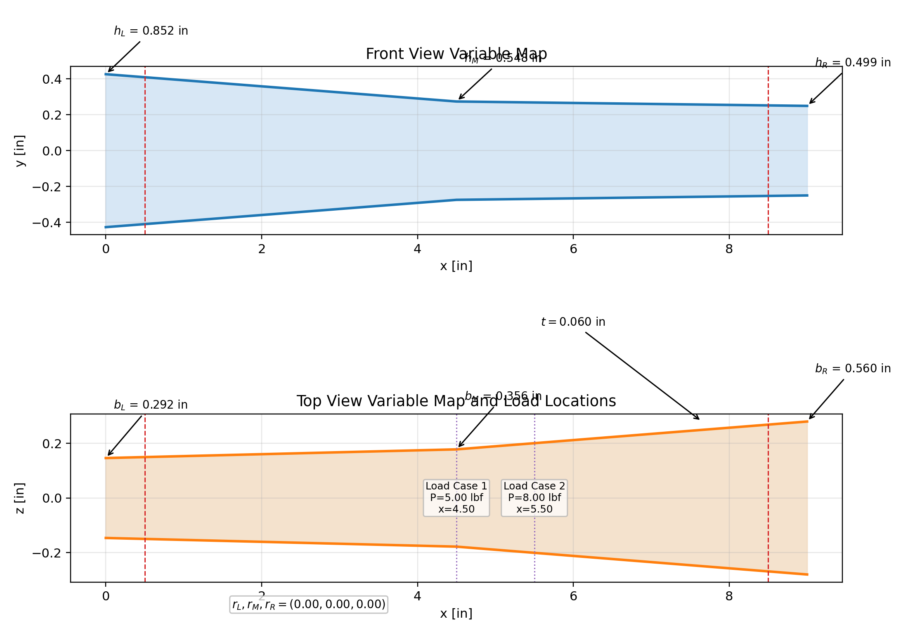
Caption: Beam B parameter map. The large left-end height (h_L = 0.852\ in, Support A) tapering to a shorter right end (h_R = 0.499\ in, Support B) is opposite in sense to Beam A.
The closed-tube geometry presented two main challenges:
material inside the hollow tube bore, which would be unremovable after printing. This was resolved by blocking supports in the interior volume via the slicer's support-paint tool.
rotation about the span axis reduces the effective overhang angle of the top flange, avoiding bridging failures. Without the rotation, the flat top wall (b approx. 0.4\ in) would bridge approximately 10 mm unsupported.
showed outer dimensions within +/- 0.5\ mm of CAD for both beams, consistent with the K1's 0.4 mm nozzle positional accuracy.
ridging along the long edges where the top and side walls meet. These ridges are caused by the overhang transition layer stacking slightly proud of the nominal surface and were not machined off before testing. More noticeably, the printed end faces on one beam were not perfectly square: the end cross-section sat at approximately 4--5^deg from the expected normal direction. This is likely due to the print bed leveling and the small contact footprint of the beam end during printing. The angular deviation is not large enough to significantly change the support reaction geometry (a 5^deg tilt shifts the effective span by approx. 0.04\ in, less than 0.5%), but it was noted as a workmanship issue. Photos of the ridge and end deformation are shown below.
\fbox0pt4cm6cm Caption: Photo 1: Edge ridging visible along top-to-side wall transition. [INSERT PHOTO]
\hfill
\fbox0pt4cm6cm Caption: Photo 2: End face angular deviation (approx.4--5^deg). [INSERT PHOTO]
The supports are spaced 8.0 in apart (center-to-center) with at least 0.5 in contact width per the project specification. Each beam overhangs 0.5 in beyond each support. A horizontal reference string is used as a baseline for deflection measurement. Load is applied by hanging a water-filled bucket from the beam at the prescribed load point.
\medskip\noindent Test video: [INSERT YOUTUBE LINK HERE]
\medskip\noindent Program tutorial video: [INSERT YOUTUBE LINK HERE]
Beam A was the second-ranked candidate from the optimization study (hence ``Trial 2''). It is the lighter beam and served as the primary test specimen. Both load cases were applied in sequence without removing the beam from the supports between cases.
Beam A placed upright (taller dimension vertical, height governs bending). Support A end (shorter, h = 0.536\ in) at left pin; Support B end (taller, h = 0.672\ in) at right pin. Actual applied load measured on scale: P_1 = 4.95\ lbf (nominal 5.0 lbf; wire weight not included). Load point: 4.0 in from Support A.
Caption: LC1 results for Beam A (Trial 2, upright, 5 lbf at midspan). Deflection values are in inches; location measured from Support A along the span.
| Quantity | Theory | Measured |
|---|---|---|
| Weight of beam [g] | 18.4 | N/M |
| R_A [lbf] | 2.500 | N/A |
| R_B [lbf] | 2.500 | N/A |
| Max deflection |v|_max [in] | 0.054 | N/M |
| Location of max deflection [in from A] | 3.926 | approx. 4.0 |
During LC1 loading, Beam A showed only minimal visible deflection, estimated qualitatively as approximately 1--2^deg of visible rotation or bending by inspection. No cracking, creaking, layer separation, or permanent deformation was observed after the load was removed. Because a direct displacement reading was not recorded, the measured maximum deflection is listed as not measured (N/M).
Beam A rotated 90^deg about the span axis (width now vertical, width governs bending). Keep the same end at each support as in LC1. Actual applied load measured on scale: P_2 = 7.95\ lbf (nominal 8.0 lbf; wire weight not included). Load point: 5.0 in from Support A.
Caption: LC2 results for Beam A (Trial 2, side-rotated, 8 lbf at 5 in from A). Deflection values are in inches; location measured from Support A along the span. LC2 is the governing load case.
| Quantity | Theory | Measured |
|---|---|---|
| R_A [lbf] | 3.000 | N/A |
| R_B [lbf] | 5.000 | N/A |
| Max deflection |v|_max [in] | 0.122 | N/M |
| Location of max deflection [in from A] | 4.298 | approx. 4.3 |
| Min FoS (theory) | 1.674 | N/A |
| Pass/Fail | Pass (theory) | Pass |
Under the governing LC2 side-load condition, Beam A again showed only minimal visible deflection, estimated qualitatively as approximately 1--2^deg. The beam remained intact throughout the test, with no visible failure location, cracking, or layer separation. The experimental outcome was recorded as a pass. Since a direct displacement reading was not recorded, the measured maximum deflection is listed as N/M.
Beam B was the fourth-ranked candidate from the optimization study (hence ``Trial 4''). It is the heavier beam with opposite asymmetric taper compared to Beam A, and served as the backup specimen. Beam B was not physically tested; its predicted results are included as a backup-design comparison only.
Beam B placed upright. Support A end (tall, h = 0.852\ in) at left pin; Support B end (short, h = 0.499\ in) at right pin. Planned applied load: P_1 = 4.95\ lbf based on the Beam A test load setup (nominal 5.0 lbf). Load point: 4.0 in from Support A.
Caption: LC1 results for Beam B (Trial 4, upright, 5 lbf at midspan). Deflection values are in inches; location measured from Support A along the span.
| Quantity | Theory | Measured |
|---|---|---|
| Weight of beam [g] | 19.5 | N/M |
| Max deflection |v|_max [in] | 0.047 | Not tested |
| Location of max deflection [in from A] | approx. 4.0 | Not tested |
Beam B was retained as a backup specimen but was not experimentally loaded. Therefore no measured deflection, failure observation, or pass/fail result was recorded for this load case.
Beam B rotated 90^deg. Same end-to-support assignment as LC1. Planned applied load: P_2 = 7.95\ lbf based on the Beam A test load setup (nominal 8.0 lbf). Load point: 5.0 in from Support A.
Caption: LC2 results for Beam B (Trial 4, side-rotated, 8 lbf at 5 in from A). Deflection values are in inches; location measured from Support A along the span.
| Quantity | Theory | Measured |
|---|---|---|
| Max deflection |v|_max [in] | 0.141 | Not tested |
| Location of max deflection [in from A] | approx. 4.3 | Not tested |
| Min FoS (theory) | 1.649 | N/A |
| Pass/Fail | Pass (theory) | Not tested |
Beam B was not experimentally loaded in LC2. The table therefore reports only the theoretical prediction and identifies the measured outcome as not tested.
Caption: Predicted vs.\ measured maximum deflection for both beams under both load cases. All deflection values in inches. Percent error = 100x (measured - theory)/theory. Fill in measured values and compute percent error after testing. Theory deflections were computed with k_infill=0.85; the actual beams were printed at 100% infill, so measured values are expected to be somewhat lower than predicted.
| Beam (Trial) | Load Case | Theory |v|_max [in] | Measured |v|_max [in] | Percent Error |
|---|---|---|---|---|
| Beam A (Trial 2) | LC1 (upright, 5 lbf) | 0.054 | N/M | N/A |
| Beam A (Trial 2) | LC2 (side, 8 lbf) | 0.122 | N/M | N/A |
| Beam B (Trial 4) | LC1 (upright, 5 lbf) | 0.047 | Not tested | N/A |
| Beam B (Trial 4) | LC2 (side, 8 lbf) | 0.141 | Not tested | N/A |
The physical test confirmed that Beam A survived both required loading conditions with only minimal visible deflection. A direct displacement reading was not recorded, so percent error could not be computed from the experimental data. The qualitative observation that the beam appeared stiffer than expected is consistent with the fabrication mismatch: the analysis assumed reduced effective stiffness for partial infill, while the actual beams were printed at 100% infill.
assumes a linear stress--strain relationship throughout. PLA may exhibit slight nonlinearity at high load near the governing FoS.
is \theta_max approx. 0.051\ rad\ (2.9^deg), near the boundary of the small-angle approximation. Actual deflections may be slightly larger than predicted.
is < 0.3% of applied loads and is neglected.
True FDM anisotropy is collapsed into two scalar factors (k_orient, k_infill). The analysis used k_infill = 0.85 (calibrated for approx. 40% rectilinear infill), but the physical beams were printed at 100% infill. This means the effective stiffness of the printed part is higher than modeled; measured deflections should be systematically lower than the theoretical predictions. Layer-bonding quality also varies with ambient temperature and print speed.
actual contact friction introduces minor moments at the supports.
introduces uncertainty from water weight measurement. The wire used to hang the bucket was not weighed separately; scale readings gave P_1 = 4.95\ lbf and P_2 = 7.95\ lbf, both 0.05\ lbf (1%) below nominal. Including wire weight in the bucket reading would bring the total close to the nominal values, so the net load error is small. Scale reading uncertainty is +/- 0.1\ lbf.
has approximately +/- 1\ mm resolution.
dimensions deviate from nominal by +/- 0.5\ mm, directly affecting I(x) and therefore deflection and stress.
by ruler measurement; +/- 2\ mm positioning error changes the peak moment by up to \sim 1.5%.
The project team consisted of Chauncey Patrick, Brennan Stanley, and Nikhil Veeramachaneni. All three team members contributed to the beam design process, fabrication planning, physical test setup, experimental documentation, and final report preparation. Specific responsibilities included developing and checking the analysis workflow, reviewing candidate beam geometries, preparing the selected designs for printing, recording test loads and deflections, and assembling the final written and visual deliverables.
A 10-variable parametric beam optimizer was developed for the MEEN 305 final project. The model couples the full equation chain from statics through stress through deflection, and optimizes cross-section geometry against both required load cases simultaneously. Over 1,300 candidate designs were evaluated across more than 20 distinct optimization runs.
Two beams were fabricated and physically tested:
print-safe design. Governing: LC2 side-bending at x approx. 5.5\ in.
heavier with a different asymmetric taper.
Both beams are asymmetric closed-tube designs; each end has a distinct cross-section tuned to the asymmetric LC2 reaction forces (R_A = 3\ lbf, R_B = 5\ lbf). Correct support placement (see Section sec:orientation) is essential to achieving the predicted FoS margins.
The optimal topology is a non-symmetric taper: Beam A's left end (Support A) is shorter and slightly wider while its right end (Support B) is taller and narrower, driven by LC2 placing greater shear demand at Support B. The optimizer consistently chose closed-tube geometries with no web openings, trading some material efficiency for robust printability.
Beam A was selected as the submitted report candidate after testing. It passed both LC1 and the governing LC2 condition without visible cracking, layer separation, or permanent deformation. The observed deflection was minimal by visual inspection, approximately 1--2^deg of visible rotation or bending, but no direct displacement reading was recorded. Therefore the experimental tables report the measured displacement as N/M rather than computing a percent error. This qualitative result is still consistent with the analysis because the physical beams were printed at 100% infill, making them stiffer than the 40%-infill effective stiffness assumption used in the theoretical model.
\appendix
The 20 design iterations below represent the major steps taken throughout the project, from the initial solid rectangular bar to the two final candidates that were printed and tested. Each iteration reflects a deliberate design decision: changing the cross-section type, adjusting a dimension, introducing or removing a feature, or checking printability. The weight column is the predicted beam weight from the analysis program. LC2 (8 lbf side load, 5 in from Support A) governs for all iterations once the beam is sufficiently slender because it produces 50% more bending moment than LC1 (10 vs.\ 15 lbf\cdotin).
Caption: Design iteration summary. Iterations 1 through 18 represent intermediate designs explored during the optimization study. Iterations 19 and 20 are the two beams that were fabricated and tested. \small
| 1 | Solid rectangular bar, 1''x 1'', uniform cross-section throughout. | ||
|---|---|---|---|
| 184 | 26.4 | LC2; way over designed \\[2pt] | |
| 2 | Hollow rectangular tube, 1''x 1'' outer, 0.10'' wall, uniform. | ||
| 66 | 8.3 | LC2; still very heavy \\[2pt] | |
| 3 | Reduced outer size to 0.75''x 0.75'', 0.08'' wall, uniform. | ||
| 39 | 4.6 | LC2; comfortable margin \\[2pt] | |
| 4 | Added a linear height taper: h = 0.70'' at supports, 0.90'' at midspan. | ||
| 36 | 3.2 | LC2; taper helps LC1 \\[2pt] | |
| 5 | Added width taper alongside height taper: wider at left end (b_L = 0.80''), | ||
| 33 | 2.5 | LC2; wider left improves S_side \\[2pt] | |
| 6 | Introduced web lightening slots at midspan (r = 0.35), closed near supports. | ||
| 29 | 2.1 | LC2; weight drops noticeably \\[2pt] | |
| 7 | Increased midspan opening ratio to r = 0.55. Adjusted height profile | ||
| 26 | 1.8 | LC2; good balance \\[2pt] | |
| 8 | Pushed opening ratio to r = 0.72 and reduced wall to t = 0.065''. | ||
| 23 | 1.38 | Fails FoS; rejected \\[2pt] | |
| 9 | Backed off to r = 0.60, increased right-end height to restore FoS margin. | ||
| 26 | 1.52 | LC2; barely passes; risky \\[2pt] | |
| 10 | Asymmetric height: raised right-end height, lowered left-end height. | ||
| 27 | 1.60 | LC2; better right-side margin \\[2pt] | |
| 11 | Widened left end (b_L = 0.85''), narrowed right (b_R = 0.38''). | ||
| 28 | 1.63 | LC2; logical topology \\[2pt] | |
| 12 | Reduced wall thickness to minimum printable value, t = 0.060'' | ||
| 27 | 1.60 | LC2; wall at floor \\[2pt] | |
| 13 | Combined the asymmetric taper with r = 0.58 midspan opening. | ||
| 25 | 1.56 | Bridging flagged; print risk \\[2pt] | |
| 14 | Closed all web openings (r = 0 throughout) to eliminate bridging. | ||
| 29 | 1.72 | LC2; solid walls; clean geometry \\[2pt] | |
| 15 | Scaled down closed-tube proportions while keeping solid walls. | ||
| 27 | 1.66 | LC2; closed tube now lighter \\[2pt] | |
| 16 | Alternative proportion set: taller mid-section, narrower ends. | ||
| 26 | 1.61 | LC2; slightly lighter \\[2pt] | |
| 17 | Explored reversed taper: taller left end, shorter right end. | ||
| 26 | 1.63 | LC2; different but comparable \\[2pt] | |
| 18 | Refined closed-tube proportions across multiple trials. | ||
| 25 | 1.65 | LC2; approaching minimum \\[2pt] | |
| 19.5 | 1.649 | Printed; backup \\[6pt] | |
| 18.4 | 1.674 | Printed; primary |
The four test trials below correspond to the two beams tested under both load cases. Each summary includes the beam geometry profiles, load case analysis plots (stress, FoS, deflection vs.\ x [in]), and key cross-section and material property data.
\bigskip \noindentNote on figure axes: All spanwise plots have x [in] on the horizontal axis (0 to 9 in total length, supports at 0.5 in and 8.5 in). Stress plots show \sigma_vm [psi] and FoS on the left vertical axis; deflection plots show v(x) [in] on the vertical axis (positive = downward).
Trial 2: Beam A (18.4 g, FoS 1.674)
Caption: Trial 2 (Beam A) outer cross-section profiles. Left: height h(x) [in] vs.\ span position x [in]. Centre: width b(x) [in]. Right: web opening ratio r(x) = 0 (solid walls). Wall thickness t = 0.060\ in uniform. Material: PLA, E_eff = 297,500\ psi, \sigma_allow,eff = 2,380\ psi.
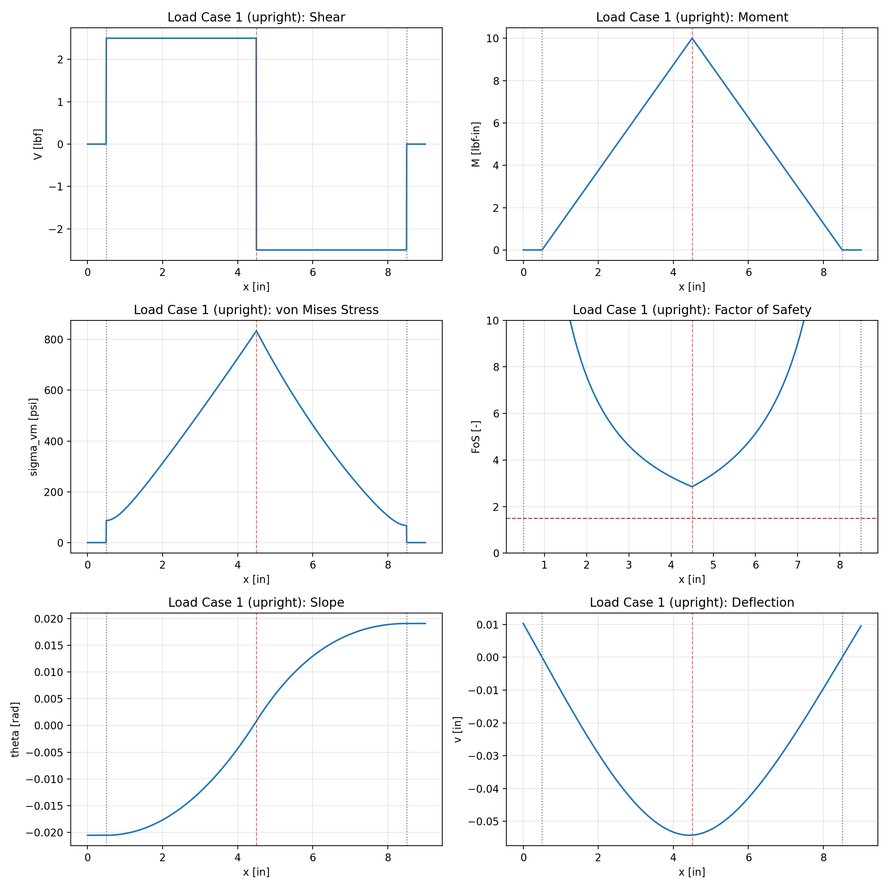
Caption: Trial 2, LC1 (upright, P=5\ lbf at x=4\ in). Top: von Mises stress \sigma_vm(x) [psi] (left axis) and FoS(x) (right axis) vs.\ x [in]. The dashed horizontal line marks FoS=1.5. Bottom: deflection v(x) [in] vs.\ x [in]. Governing FoS = 2.478 (well above limit); max deflection = 0.054 in at x approx. 3.9\ in.
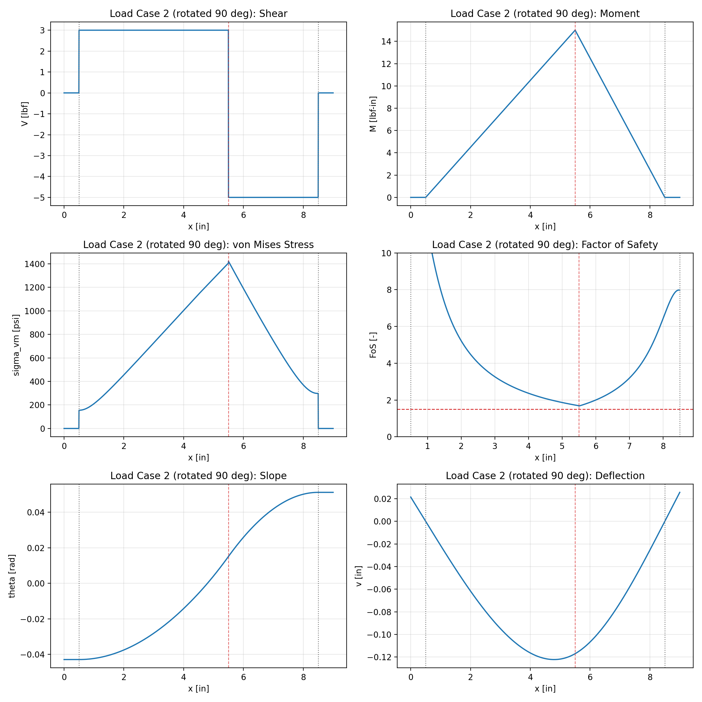
Caption: Trial 2, LC2 (side-rotated, P=8\ lbf at x=5\ in). Top: von Mises stress \sigma_vm(x) [psi] and FoS(x) vs.\ x [in]. Bottom: deflection v(x) [in] vs.\ x [in]. Governing FoS = 1.674 at x = 5.5\ in; max deflection = 0.122 in at x approx. 4.3\ in. LC2 controls the design.
Trial 4: Beam B (19.5 g, FoS 1.649)
Caption: Trial 4 (Beam B) outer cross-section profiles. Left: height h(x) [in] vs.\ span position x [in]. Centre: width b(x) [in]. Right: web opening ratio r(x) = 0 (solid walls). Wall thickness t = 0.060\ in uniform. Material: PLA, E_eff = 297,500\ psi, \sigma_allow,eff = 2,380\ psi. Note opposite taper from Trial 2: tall/narrow at Support A, short/wide at Support B.
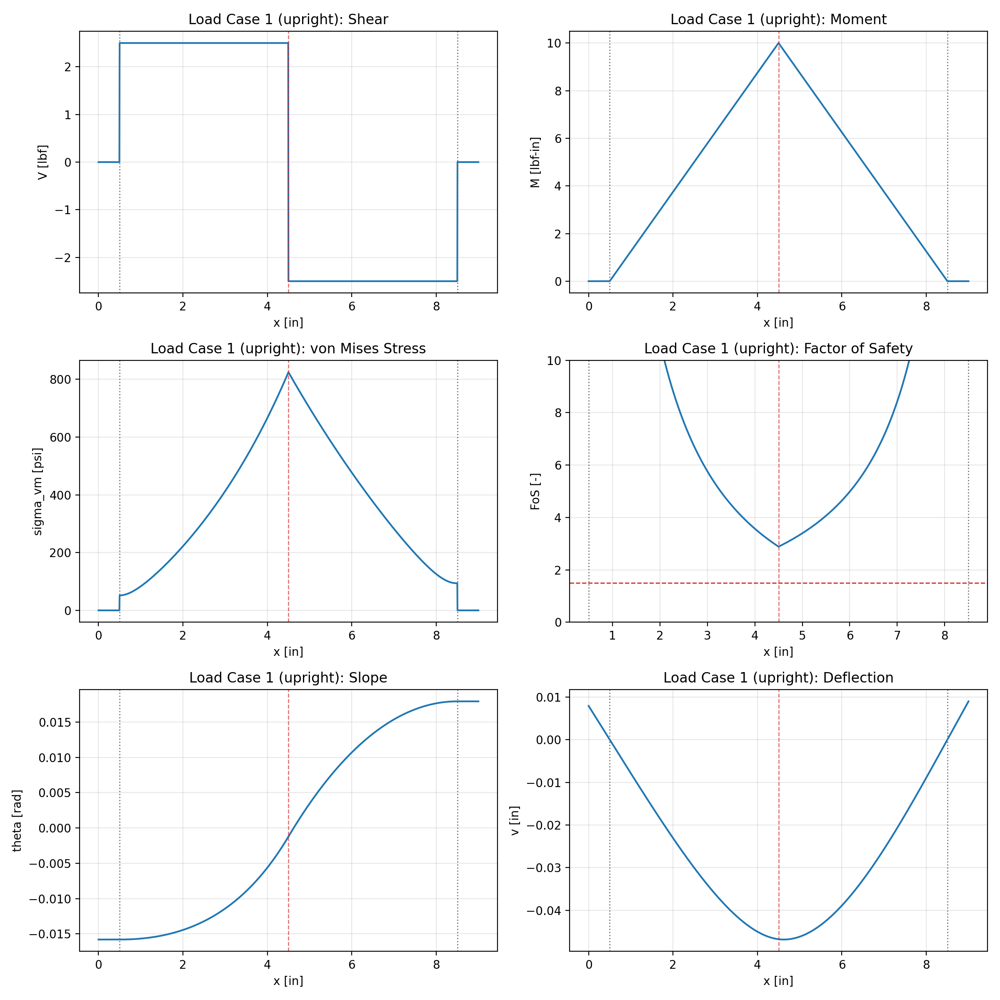
Caption: Trial 4, LC1 (upright, P=5\ lbf at x=4\ in). Top: von Mises stress \sigma_vm(x) [psi] and FoS(x) vs.\ x [in]. Bottom: deflection v(x) [in] vs.\ x [in]. Max deflection = 0.047 in.
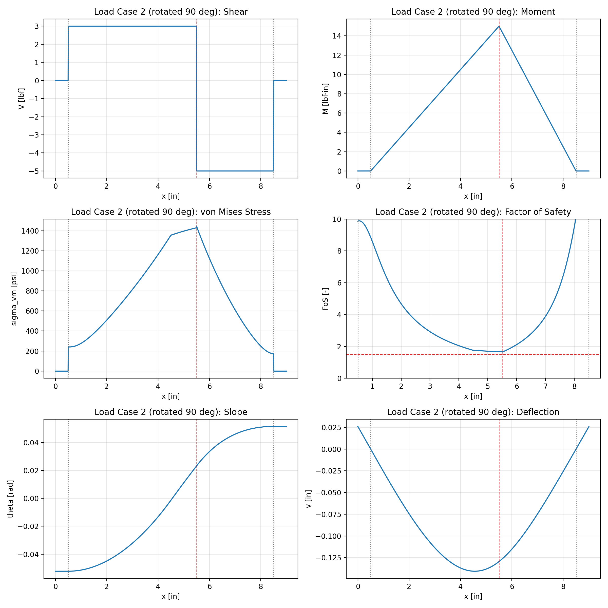
Caption: Trial 4, LC2 (side-rotated, P=8\ lbf at x=5\ in). Top: von Mises stress \sigma_vm(x) [psi] and FoS(x) vs.\ x [in]. Bottom: deflection v(x) [in] vs.\ x [in]. Governing FoS = 1.649 at x = 5.5\ in; max deflection = 0.141 in.
| Symbol | Meaning | Units |
|---|---|---|
| L | support span | in |
| L_total | total beam length | in |
| P | applied point load | lbf |
| a | load location from support A | in |
| R_A, R_B | reaction forces at A and B | lbf |
| V(x) | shear force | lbf |
| M(x) | bending moment | lbf\cdotin |
| b(x) | outer tube width | in |
| h(x) | outer tube height | in |
| t | wall thickness | in |
| r(x) | web opening ratio | -- |
| h_clear(x) | inner clear height = h-2t | in |
| A(x) | cross-sectional area | in^2 |
| I(x) | second moment of area | in^4 |
| S(x) | section modulus = I/c | in^3 |
| c_y(x) | extreme-fiber distance, upright bending = h(x)/2 | in |
| c_z(x) | extreme-fiber distance, side bending = b(x)/2 | in |
| A_shear(x) | effective shear area | in^2 |
| \sigma_b(x) | bending normal stress | psi |
| \tau(x) | shear stress | psi |
| \sigma_vm(x) | von Mises equivalent stress | psi |
| FoS(x) | factor of safety | -- |
| v(x) | transverse deflection | in |
| \theta(x) | slope | rad |
| E | elastic modulus (bulk) | psi |
| E_eff | effective elastic modulus | psi |
| \sigma_allow | allowable stress (bulk) | psi |
| \sigma_allow,eff | effective allowable stress | psi |
| \rho | weight density | lbf/in^3 |
| k_orient | FDM orientation factor | -- |
| k_infill | FDM infill factor | -- |
| W | beam weight | lbf |
| \ell_min | minimum web ligament per side | in |